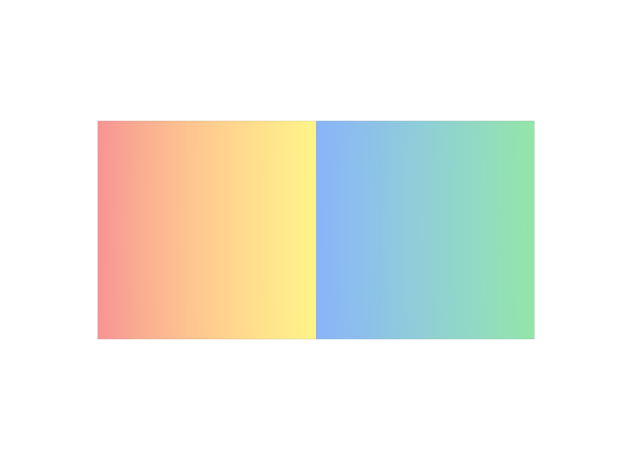

Pointの個数だけ値を書く
6個ではなく8個です。個数が合わないと、Rendererは値を読み取れず、既定色にフォールバックすることがあります。
LESSON 24E · PRIMVAR INTERPOLATION
同じPointでも、Faceごとに違う値を持たせられます
今日これだけ
公式情報に基づく説明
faceVaryingは、各FaceがそれぞれのPointを使うたびに一つずつ値を対応させるInterpolationです。値の個数はfaceVertexIndicesの長さ、つまりFace Vertexの総数と一致します。同じPointでも、使っているFaceが違えば別の値を持てるため、Faceの境目で値を不連続にできます。面の内側はvaryingと同じく線形に補間されます。
USDA
#usda 1.0
(
defaultPrim = "World"
metersPerUnit = 1
upAxis = "Y"
)
def Xform "World"
{
def Mesh "Panel"
{
uniform token subdivisionScheme = "none"
int[] faceVertexCounts = [4, 4]
int[] faceVertexIndices = [0, 1, 4, 3, 1, 2, 5, 4]
point3f[] points = [
(0, 0, 0), (1, 0, 0), (2, 0, 0),
(0, 1, 0), (1, 1, 0), (2, 1, 0),
]
color3f[] primvars:displayColor = [
(0.85, 0.2, 0.2), (0.95, 0.8, 0.15), (0.95, 0.8, 0.15), (0.85, 0.2, 0.2),
(0.15, 0.35, 0.85), (0.2, 0.7, 0.3), (0.2, 0.7, 0.3), (0.15, 0.35, 0.85),
] (
interpolation = "faceVarying"
)
}
}値の並びはfaceVertexIndicesとまったく同じ順番です。前半4つが1枚目のFace（赤・黄・黄・赤）、後半4つが2枚目のFace（青・緑・緑・青）です。中央の縦の辺は、1枚目のFaceからは黄、2枚目のFaceからは青として扱われます。
結果

faceVaryingだけです。examples/lesson-24e/facevarying.usda / Apple USD Tools 0.25.2 のusdrecord（Hydra Storm・Metal）/ macOS 26.5.2・Apple M4Diagram
Python
from pxr import Gf, Sdf, Usd, UsdGeom
stage = Usd.Stage.CreateNew("facevarying.usda")
UsdGeom.Xform.Define(stage, "/World")
mesh = UsdGeom.Mesh.Define(stage, "/World/Panel")
mesh.CreateSubdivisionSchemeAttr("none")
mesh.CreateFaceVertexCountsAttr([4, 4])
mesh.CreateFaceVertexIndicesAttr([0, 1, 4, 3, 1, 2, 5, 4])
mesh.CreatePointsAttr([
Gf.Vec3f(0, 0, 0), Gf.Vec3f(1, 0, 0), Gf.Vec3f(2, 0, 0),
Gf.Vec3f(0, 1, 0), Gf.Vec3f(1, 1, 0), Gf.Vec3f(2, 1, 0),
])
red, yellow = Gf.Vec3f(0.85, 0.2, 0.2), Gf.Vec3f(0.95, 0.8, 0.15)
blue, green = Gf.Vec3f(0.15, 0.35, 0.85), Gf.Vec3f(0.2, 0.7, 0.3)
pv = UsdGeom.PrimvarsAPI(mesh).CreatePrimvar(
"displayColor", Sdf.ValueTypeNames.Color3fArray, UsdGeom.Tokens.faceVarying)
pv.Set([red, yellow, yellow, red,
blue, green, green, blue])
stage.Save()Face Vertexの総数はlen(mesh.GetFaceVertexIndicesAttr().Get())で確認できます。このPanelでは8です。faceVertexCountsの中身を合計しても同じ数になります。
USDA → Python mapping
USDA
interpolation = "faceVarying"↓Python
UsdGeom.Tokens.faceVaryingUSDA
前半4値 + 後半4値↓Python
pv.Set([red, yellow, yellow, red, blue, green, green, blue])Beginner notes
よくある間違い
6個ではなく8個です。個数が合わないと、Rendererは値を読み取れず、既定色にフォールバックすることがあります。
値はfaceVertexIndicesと同じ順に並べます。Faceの区切りは配列の中では見えないので、faceVertexCountsを見ながら4個ずつのまとまりとして数えます。
この例のように同じ色が何度も出てくる場合、値を書き並べるとファイルが大きくなります。値を一度だけ書いて使い回す方法がLesson 24FのIndexed Primvarです。
Glossary
faceVaryingで持たせることが多い。Official references
確認日: